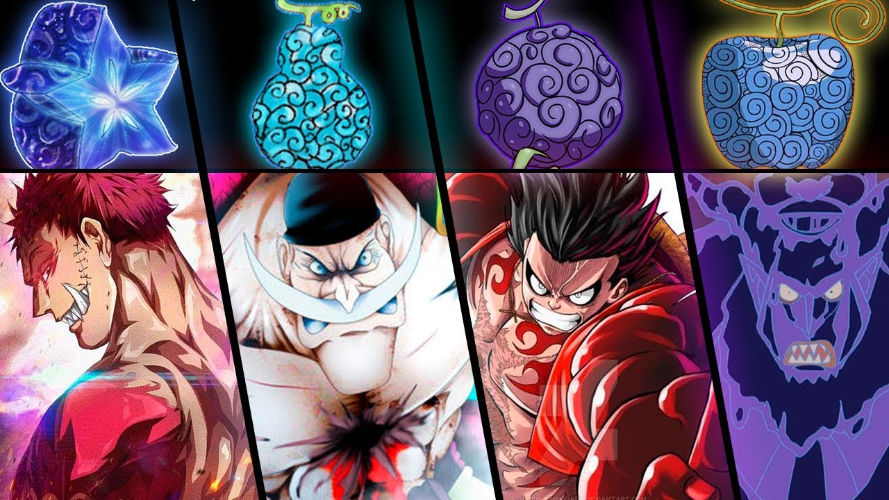

O que são as Akuma no Mi?
As Akuma no Mi são frutas místicas espalhadas pelo mundo que concedem poderes sobre-humanos a quem as consome. Porém, quem come uma delas perde completamente a capacidade de nadar.
Os Três Grupos Principais
Existem três classificações principais para as Akuma no Mi. Abaixo a explicação de cada uma delas:
- Paramecia
-
É o tipo mais comum. Dá ao usuário uma habilidade física ou altera o corpo de formas variadas (como produzir substâncias ou manipular o ambiente).
Exemplo: Gomu Gomu no Mi (Fruta da Borracha), comida pelo Luffy.

- Logia
-
Considerada uma das classes mais poderosas. Permite ao usuário transformar completamente
o seu corpo em um elemento da natureza (fogo, gelo, fumaça, luz, etc.), tornando-o intangível a ataques físicos comuns.Exemplo: Mera Mera no Mi (Fruta do Fogo), que pertencia ao Ace.
- Zoan
-
Permite ao usuário se transformar em uma espécie animal ou em um híbrido de humano e animal. Aumenta drasticamente
as capacidades físicas e a força bruta no combate. Existem também as Zoan Místicas (animais lendários).Exemplo: Hito Hito no Mi (Fruta do Humano), comida pelo Chopper.